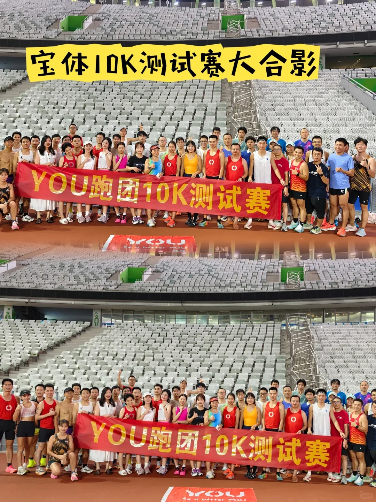
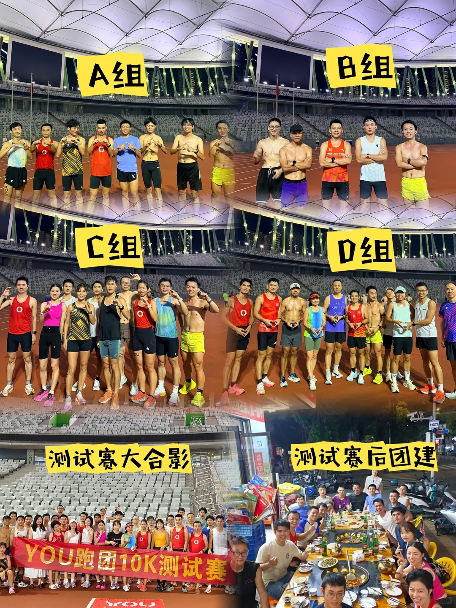

首届10K场地测试：跑一场，再坐下来聊聊
YOU首次组织10K场地测试，报名首日就集结了近60位跑友。测试结束后，跑友们又坐到一起吃饭，聊各自跑下来的感受。

跑道上测试，场边有人接应
原帖记录了测试顺利结束的消息，也把镜头留给了后勤和啦啦队。跑友在跑道上完成自己的测试，场边的伙伴准备补给、呐喊助威。
合照中保留了A、B、C、D的分组合影。这是当次测试的现场记录，当前冬训的分组与训练内容，请查看本站这一期课表。

饭桌上的复盘
测试之后还有聚餐复盘，跑友们一起交流跑步心得。当天的活动把测试、服务和跑后交流连在一起，成绩之外，也留下了一次共同训练的记录。
本次测试的规则制定由原帖鸣谢的爱吃小面的小刘参与。更多现场照片可在跑团原帖查看。